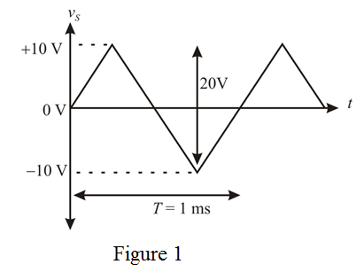
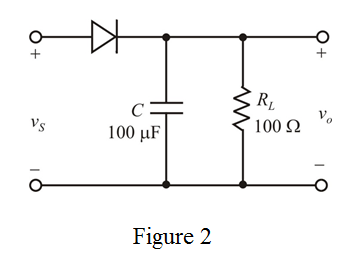
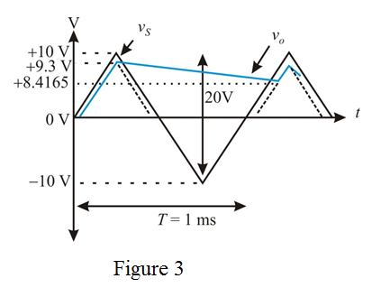

Step 1:
Draw the triangular wave form with peak to peak amplitude, zero average and frequency as shown in Figure 1.

Step 2:
Draw the half wave rectifier circuit as shown in Figure 2.

Step 3:
Determine the capacitor maximum recharge voltage.

When the diode is off the capacitor discharges through load resistor, . The expression of discharging voltage is,
Determine the time period of the discharge wave form.
The output voltage is,
Substitute for  ,
,  for
for  and for C.
and for C.
Step 4:
Draw the output wave form as shown in Figure 3.

Determine the average value of output voltage.
Therefore, the average output is.
Step 5:
Determine the difference in the output voltage when diode is conducting and when the diode is cut-off.
Step 6:
While the diode conducting in period  , the input and output waveform slopes are equal
, the input and output waveform slopes are equal
Therefore, the time interval during the diode conduction is .
Step 7:
The capacitor gains charge (Diode conduction) equal to the capacitor’s lost charge.
(Diode in cut off).
Determine the value of load current.
Determine the value of average diode current.
Therefore, the average diode current is,
.
Step 8:
Determine the capacitor peak current.
Determine the peak current through the load resistor.
Determine the average peak diode current.
Therefore, the average maximum diode current is,
.